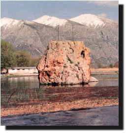

 |
Antik kent, Çivril-Dinar karayolu üzerindeki Iþýklý Kasabasýnýn bulunduðu alandadýr. Kent Bergama Kralý II. Eumenes adýna kurulmuþtur. Iþýklý Kasabasýnýn güneydoðusunda bulunan su kaynaðý yakýnlarýnda antik döneme ait izler görülmektedir. Bugün "Sarýbaba Tepesi" olarak adlandýrýlan daðlýk bölgenin üzerindeki düzlük, özellikle Bizans döneminde kale olarak kullanýlmýþtýr. Bu tepenin yamaçlarý ise Eumenia'nýn nekropolüdür. |